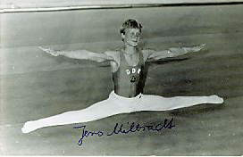

Jens Milbradt (GDR)
1990 European PH and R Silver Medalist

Medal Total
European Championships: 2 Silver
Jens was born on April 29, 1969. His father, also a gymnast, was a multiple GDR champion on pommel horse.
Competition Results
1985
Jr. GDR Championships: 1st AA
1986
Jr. European Championships: 10th AA, 2nd PH, 2nd V
Jr. Friendship Tournament (Druzhba): 2nd Team, 2nd AA, 1st PH, 1st R, 7th
V
Jr. GDR-USSR Dual Meet: 10th AA
1988
Golden Sands International: 7th AA
1989
DTB Cup: 11th AA
Shiraz International: 3rd AA
1990
Cottbus International: 1st PH
DTB Cup: 9th AA, 1st PH
European Championships: 12th AA, 2nd PH, 2nd R
GER-ITA-ROM: 18th AA
GER-USSR-USA: 5th AA
Goodwill Games: 10th AA, 5th R, 6th FX
USA-GDR Dual Meet: 1st Team, 7th AA
Walzwerker Cup: 1st AA
1991
Cottbus International: 5th AA
GER-ESP Dual Meet: 1st Team, 3rd AA
1992
Chunichi Cup: 11th AA
GER-HUN Dual Meet: 1st Team, 14th AA
World Championships: 9th R (semis), 18th PH (semis)
1993
Cottbus International: 9th AA
DTB Cup: 1st PH
GER-SUI Dual Meet: 1st Team, 4th AA
1995
Cottbus International: 8th PH (quali), 8th R (quali)
This page was created on November
05, 2005 and was last updated on August 25, 2007.
© Gymn Forum